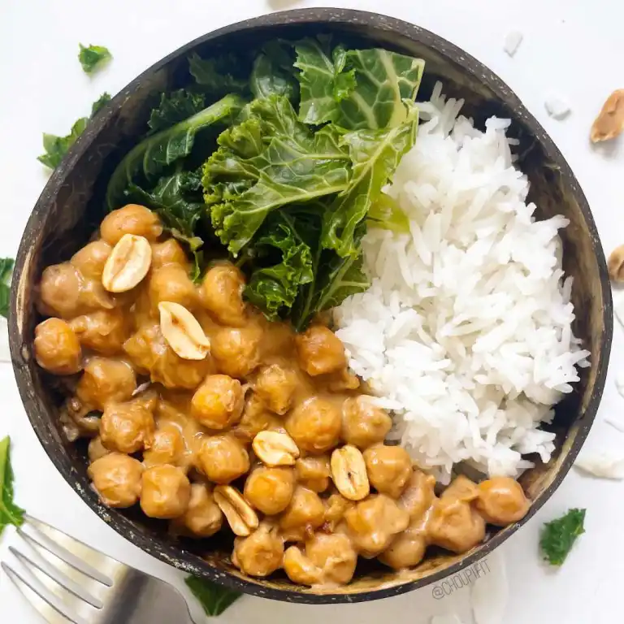

Chickpea Stew with Coconut Milk and Peanut Butter

A healthy and vegan chickpea stew recipe made with coconut milk and peanut butter
This is a stew made from chickpeas, coconut milk, peanut butter, and soy sauce. It is served with whole grain rice and your choice of vegetables.
Ingredients
- 250g of cooked chickpeas (either canned or 120g raw)
- 150 to 200g of green vegetables of your choice (kale is used here)
- 100ml of coconut milk
- 100ml of water
- 75g of whole rice (raw weight)
- 30ml of salty soy sauce
- 20g of creamy peanut butter
- 1 teaspoon of cornstarch (5g)
- Garlic powder and ginger
Steps
- Cook the rice and vegetables separately. There is no need to salt them.
- In a frying pan, gently heat the peanut butter, water, soy sauce, ginger, and garlic powder.
- Mix until you get a homogeneous mixture.
- Then, incorporate the coconut milk and cornstarch. Increase the heat and stir again.
- Drain the canned chickpeas and rinse them.
- Add the chickpeas to the pan and stir until the peanut butter sauce thickens. This should take about 3 to 5 minutes.
- On a plate, serve the rice, vegetables, and chickpeas with peanut butter and coconut milk.
Practical tip
You can replace the chickpeas with red beans or with chicken/turkey for a meat version.